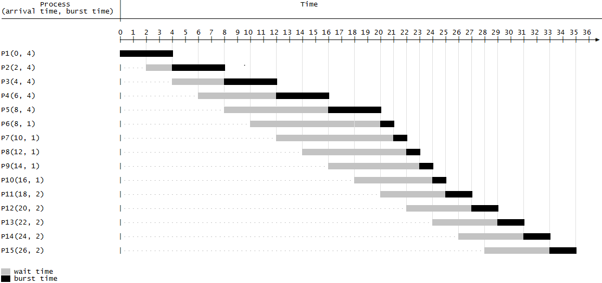
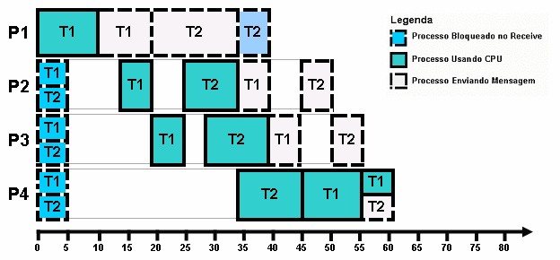
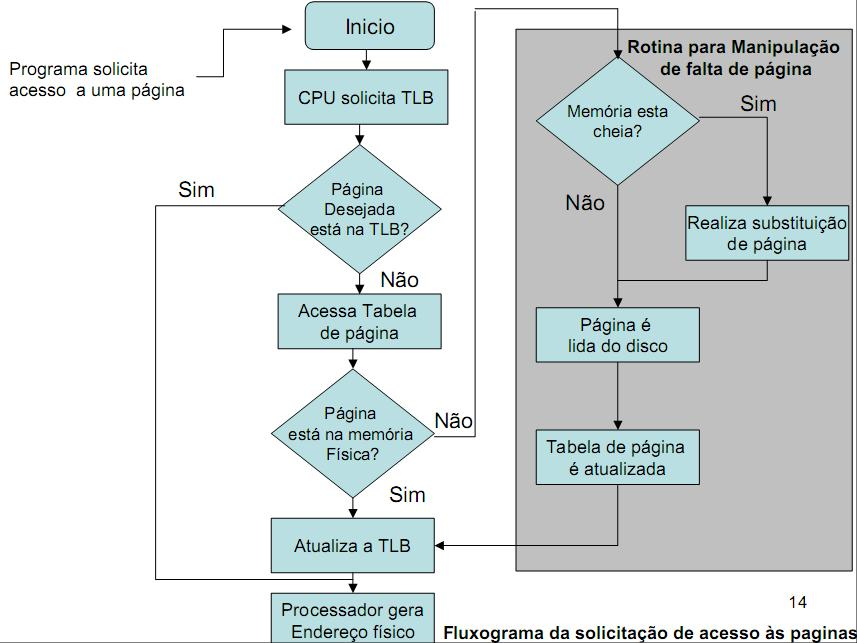

Nome completo: Diego Serafim de Sousa
Nome do/a Professor/a Tutor/a: Ricardo Ribeiro dos Santos
Título da atividade: ALGORITMOS E PROGRAMAÇÃO II-T01-2023-2
Vencimento: segunda, 2 out 2023, 23:59
a) o que é o escalonamento de processos ou threads;
b) algoritmo Round-Robin para escalonamento de processos ou threads;
c) o que é a atividade de substituição de páginas na memória principal;
d) algoritmo FIFO para substituição de páginas na memória principal.
Para concluir a atividade, realize os seguintes passos:
1. Revise o conteúdo sobre Sistemas Operacionais e pesquisa na Internet sobre os itens 1) e 2);
2. Elabore um relatório textual contendo todos os itens de a) até d);
3. Na formatação de seu texto, recomendo adotar o formato “Modelo para Publicação de Artigos” da Sociedade Brasileira de Computação: >>
3.1 Observação: você pode inserir elementos gráficos (figuras, fotos, imagens, tabelas) em seu texto.
4. Ao finalizar a preparação de seu texto, converta o arquivo para o formato PDF e envie (enviar apenas o arquivo pdf do texto) no espaço da tarefa no AVA-UFMS.
a) o que é o escalonamento de processos ou threads;
É a atividade do Sistema Operacional que gerencia a ordem de execução de processos ou threads no processador.
No caso do meu computador com processador:
Intel Xeon E5-2620 v3,
que possui 12 núcleos físicos e 24 threads (2 por núcleo),
o Sistema Operacional é responsável por distribuir esses processos ou threads de forma eficiente entre os núcleos para otimizar o uso do hardware.

b) algoritmo Round-Robin para escalonamento de processos ou threads;
Round-Robin:
- Funciona no contexto de escalonamento de processos ou threads, utilizando o processador como referência.
- uma abordagem de escalonamento, que atribui a cada processo ou thread um intervalo de tempo de CPU chamado 'quantum'.
- O sistema operacional garante que todos os processos ou threads sejam executados evitando que um único processo monopolize o processador por muito tempo.

c) o que é a atividade de substituição de páginas na memória principal;
- A substituição de páginas é uma técnica usada pelo Sistema Operacional para gerenciar a memória quando está cheia.
- A memória pode se tornar um recurso crítico em situações de alta demanda.
- O algoritmo FIFO (First-In, First-Out) é um método de substituição de páginas que opera na memória principal.

d) algoritmo FIFO para substituição de páginas na memória principal.
- Método de substituição de páginas que opera na memória principal.
- Remove a página que está na memória há mais tempo, funcionando como uma fila onde a primeira página a entrar é a primeira página a sair quando há necessidade de liberar espaço na memória principal.
- Essa técnica é um dos métodos utilizados pelo Sistema Operacional para gerenciar eficientemente a memória RAW do sistema, garantindo a continuidade do funcionamento dos processos, mesmo com a limitação física da memória.